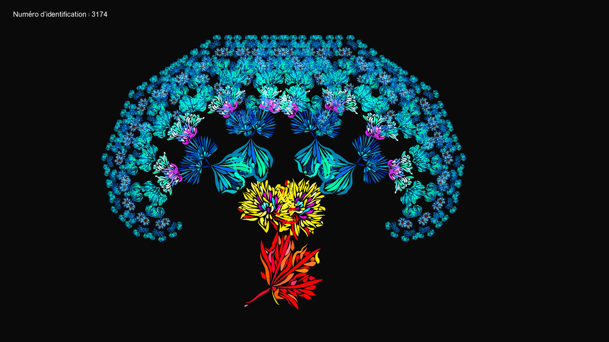
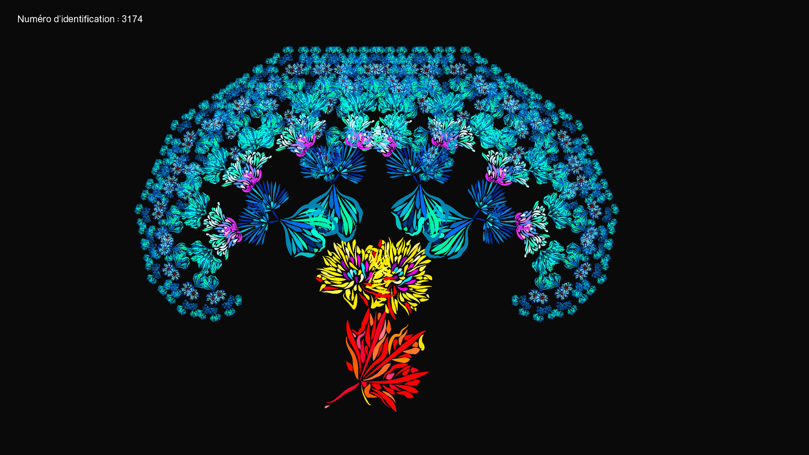
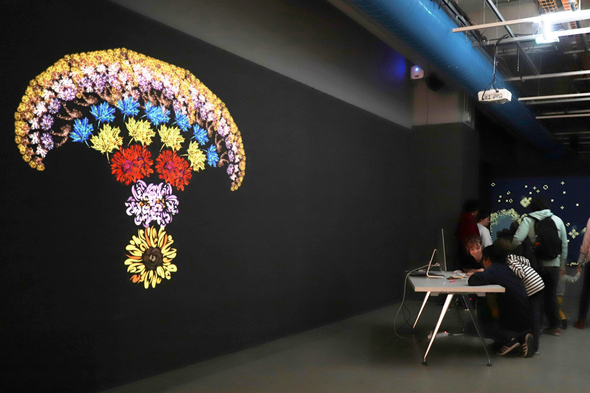
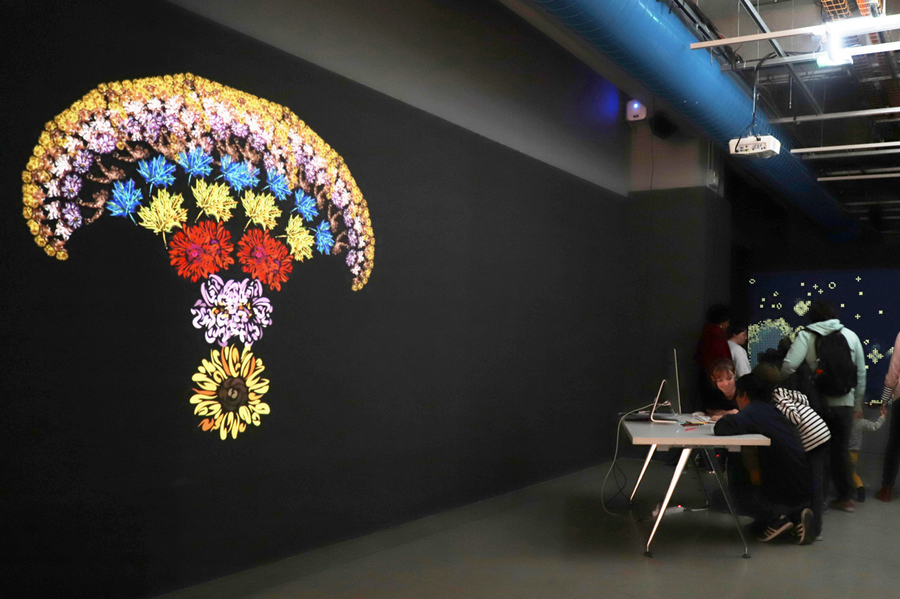

Morgan Gomez
Chimera
Processing-based interactive installation
For this project, Philomène Dont, Julian Rosinel and myself made a processing-based interactive installation for "La Fête du Code Créatif" at the Centre Pompidou museum in Paris.
We had to create an installation which could explain Spela Petric's project "Ectogenesis".
Basically, with Ectogenesis, Spela Petric injected human hormones into plant embryos to create half plant half human creatures. So to explain this project, we created a program that could allow people to create their own half plant half human Chimera.
First, they had to create their own plant using the Processing installation. Then, they had to enter some basic informations about heir Chimeras in a little booklet, such as their name, age or category. Finally, they had to report the Identification Number on the booklet, so that they could be able to find their Chimera on the project's Digital Herbarium on Instagram @chimeres_generatives.
My personal part in this project was to create the whole Processing code to make the program work. I used an algorithm named "L System", oftenly used to generate plant-like structures.
Philomène did the drawings we used, and Julian did the editorial work.


 



 
